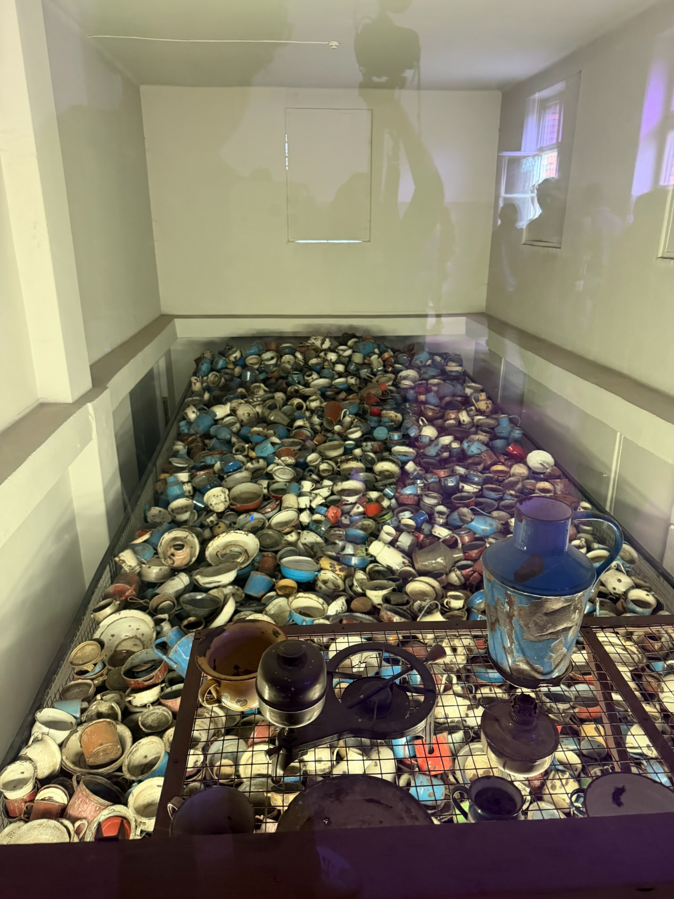
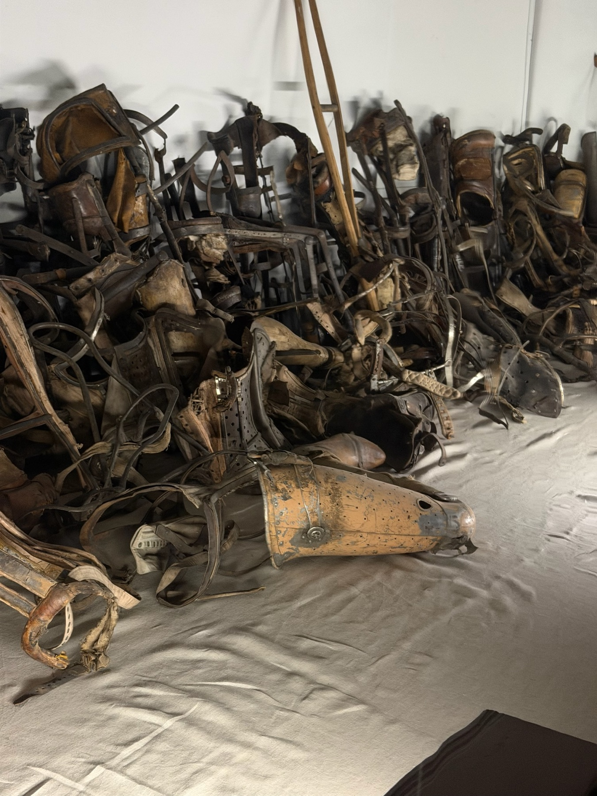
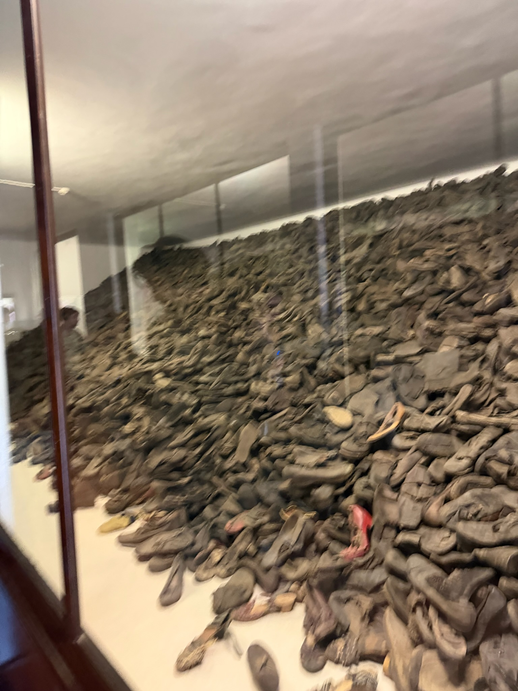

We are six students from different high schools in Brooklyn South. Our group consists of students from Leon M. Goldstein, Brooklyn Studio Secondary School, and Midwood, who came together through the Witness To History program to learn about the past and understand its impact on the world today. Through the organization called Names Not Numbers, we documented our experiences by creating a documentary that shares the stories, lessons, and reflections from our journey. Through this program, we were also able to travel to Poland.

During our journey to Poland, we visited important historical sites connected to the Holocaust, including museums, memorials, and concentration camps. These experiences helped us better understand the suffering caused by hatred, discrimination, and intolerance.

We created this website to document our experiences, share our reflections, and educate others about what we learned. Our goal is to honor the memories of those affected by the Holocaust while encouraging people to stand against antisemitism, racism, and all forms of hate. We hope our project inspires others to learn from history and help create a more compassionate and understanding world.